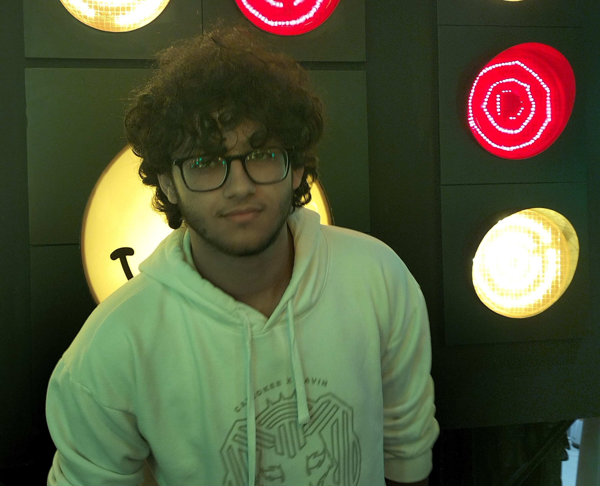

Anthony EdwardMy serious academic life started in high school, where the subjects started getting harder and more important. I started also by then feeling the passion to improve lives and change the world, So, I decided to pursue computer sciences as I liked Maths specially Calculus. I've always wanted to make a big impact on the world and today technology helps do that better than anything, I can reach billions of people in a second or less. I loved that idea. I realized how much tech changed lives, So I majored in Maths and Physics in school and came out victorious from the infamous Thanaweya Amma (Egyptian national system) with a grade that enabled me to join CS in ESLSCA University with a partial scholarship.So, October 2024 was when I started studying stuff I was even more passionate about and I liked that. I also began working alongside talented people which helped improve me. Learnt how powerful, useful and fun volunteering and extra curriculars are as my school never promoted or cared about anything like that. it was my first time entering a creative and engaging system that was based on how far I can go not how far the system or teacher can go. from then on I realised how social and outgoing I can be as I now had the chance to engage in group projects or engage in projects overall which filled me with excitement. you can check out my LinkedIn at my Links Page to see all my skills, extracurriculars ,volunteering experiences and work expericences.
I would also like to add that I love different cultures and diversity. As I am native in Arabic, fluent in English and proficient in French, I love reading about history, cultures, geography and languages/linguistics.